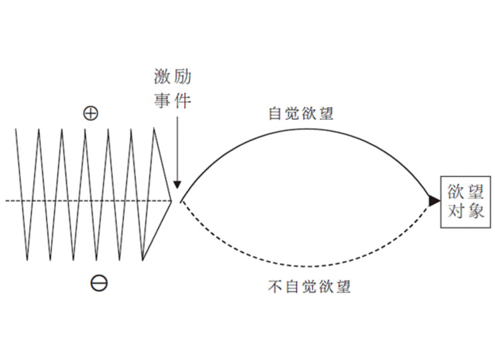

激励事件¶
故事由5部分组成：
- 激励事件 Inciting Incident
- 进展纠葛 Progressive Complications
- 危机 Crisis
- 高潮 Climax
- 结局 Resolution
故事的世界¶
所有故事应该回答的一般性问题：
-
我的人物靠什么为生？
-
我的世界的政治（权力）是什么？
-
我的世界的仪式（独特的行为模式）是什么？
-
我的世界的价值观是什么？
-
类型或类型组合是什么？
-
我的人物的履历是什么？
-
幕后故事（背景故事）是什么？
-
我的角色设计是什么？（每个角色都必须适用于一个目的，角色设计的首要原理是两极分化）
作者¶
作者：一个真正的作者，无论其媒体为何，都是一个艺术家。
两条原理控制观众的情感投入，一是移情；二是可信（指一个内部连贯的世界，其规模、深度和细节都能自圆其说，和现实毫无关系）。
除了物质和社会的细节之外，我们还要创造情感的真实可信。故事本身必须具有说服力，从事件到事件，原因和结果必须令人信服，符合逻辑。
独创性存在于对真实可信的执着追求，而不是来自标新立异的猎奇。换言之，个人化的风格不可能有意识地取得。
激励事件¶
当一个激励事件发生时，它必须是一件动态的、充分发展了的事件，而不是一个静态的或模糊的事件。
激励事件必须彻底打破主人公生活中各种力量的平衡。
主人公必须对激励事件做出反应。
如果一个事件彻底打破了我们的平衡感和控制感，我们将会需要恢复平衡。

故事脊椎¶
主人公欲望的能量形成了故事设计中的故事脊椎（又叫贯穿线或超级目标）。脊椎是主人公为恢复生活的平衡所表现出的深层欲望和所进行的不懈努力。
在故事的表面无论发生什么，每一个场景、形象和话语最终都是故事脊椎的一个方面，与欲望和行动这一核心具有某种因果或主题的联系。
求索¶
一个事件打破人物生活的平衡，使之或变好或变坏，在他内心激发起一个自觉和/或不自觉的欲望，意欲恢复平衡，于是把他送上了一条追寻欲望对象的求索之路，路上他必须与各种（内心的、个人的、个人外的）对抗力量抗衡。他也许能也许不能达成欲望。这便是亘古不变的故事要义。
**只要你深入主人公的内心，发现他的欲望，就会开始看到你的故事弧光，即激励事件把他送上的那条求索之路。
激励事件的设计¶
通过两种方式发生：
- 随机（巧合）
- 有因（决定）
主情节的激励事件必须发生在银幕之上，不能发生在幕后故事之中，也不能发生在银幕之外的场景之间。
原因：
-
当观众经历一个激励事件时，影片的戏剧大问题，就会在脑海中涌现。这是一个激发和捕捉观众好奇心的事件。由于急欲找到戏剧大问题的答案，观众的兴趣被牢牢勾住，而且能一直保持到最后一幕的高潮。
-
亲眼目睹激励事件的发生，能在观众的想象中投射出必备场景（又称为“危机”，指观众知道在故事可以结束之前必定会看到的事件）的形象。
你所做出的每一个选择，类型、背景、人物、情调，都是一种预示。通过每一句对白或每一个动作形象，你引导观众预期某种特定的可能性，于是，当事件到来时，它们便能以某种方式满足你所创立的期望。
预示的首要组成部分便是通过激励事件将必备场景（危机）投射到观众的想象之中。
激励事件的定位¶
根据经验，主情节的第一个重大事件必须在讲述过程的前1/4时段内发生。
应该把主情节的激励事件尽快引入……但务必等到时机成熟。
一个激励事件必须“勾住”观众，使之做出一种深刻而完全的反应。他们的反应不应只是情感的，还必须是理性的。这一事件不应只是撩拨观众的情感，还应导致他们提出那一“戏剧大问题”，并想象出那一“必备场景”。因此，如何对主情节的激励事件进行定位，取决于对这一问题的回答：关于主人公及其世界，观众需要知道多少东西才能引发出一种完全的反应？
只要观众对人物及其世界的了解足以令其做出完全的反应，你就必须推出你的激励事件。早不行，晚也不行，其准确时刻必须通过感觉和分析来定夺。
激励事件的质量¶
激励事件的质量（严格来说，任何事件的质量）必须与世界、人物及其类型密切相关。事件一旦构思完成，作者必须将精力集中于它的功能。激励事件能否彻底打破主人公生活中各种力量的平衡？它能否激起主人公恢复平衡的欲望？它能否在心中激发出那一自觉的欲望，令其求索那一他认为能够恢复平衡的欲望对象——无论是物质的还是非物质的。在一个复杂主人公心中，它是否还会激活一个不自觉的欲望，与其自觉的需要发生矛盾？它能否将主人公送上一条达成欲望的求索之路？它能否在观众脑中提出那一戏剧大问题？它能否投射出必备场景的影像？
激励事件的创造¶
对激励事件的构思有帮助的问题：
-
可能发生在主人公身上最坏/最好的事是什么？（阻力）
-
那一事件如何才能最终成为可能发生在主人公身上最好/最坏的事情？（转折）
我们之所以总是在“最好”和“最坏”之间伸展，是因为故事若要成为艺术，并不是讲述人类体验的中间地带。
激励事件必须打乱主人公的现状，将他的生活推出现行轨道，使人物的宇宙变成一片混乱。在这一片混乱中，你必须在高潮处找到一个结局，无论好坏，最终使这一宇宙得到重新安排，进入一个新的秩序。